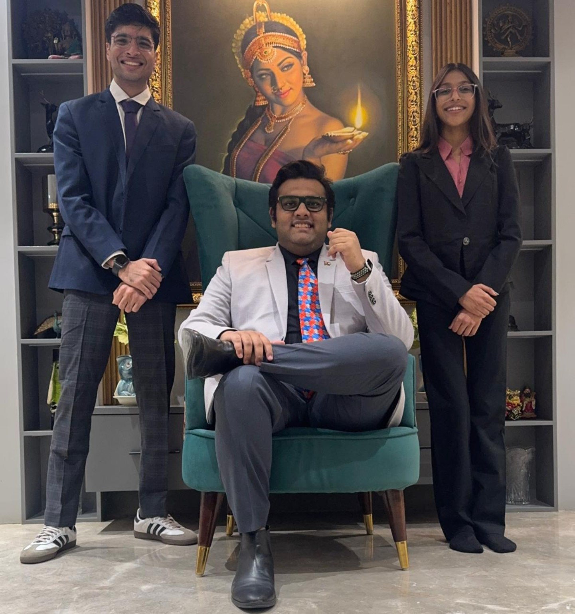

Building from the state level
Junior member, Founding President of the first Rajasthan State Council, and subsequently State President within IADS India.
Recognition and leadership are presented with context, supporting imagery and access to the complete evidence archive.

Progression from student membership and a founding state council to national presidency, Asia-Pacific regional leadership and representation of India in international general assemblies.
Junior member, Founding President of the first Rajasthan State Council, and subsequently State President within IADS India.
Vice President across two national executive boards, followed by election as National President of IADS India in January 2026, representing a national constituency of approximately 150,000 dental students.
Regional Director for Asia-Pacific within IADS, working across member associations in East Asia, South-East Asia, South Asia and Oceania.
Represented India at IADS General Assemblies connected with Türkiye, Switzerland and Azerbaijan.
The secondary authentication mark for the professional archive.
Presented only in its leadership context to preserve institutional meaning.